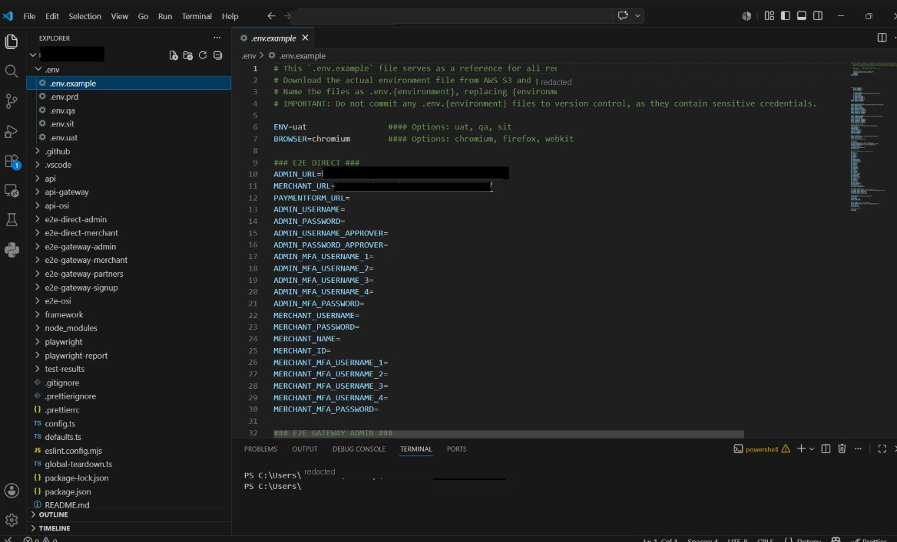

A multi-environment E2E & API automation framework.
A production-grade test automation suite for a payments platform — built with Playwright and TypeScript to run the same tests across four environments and three browser engines, organized by business domain, and wired into CI/CD with secrets handled securely.
The framework runs one test codebase against multiple deployment environments by swapping a single configuration variable, and across Chromium, Firefox, and WebKit. Test suites are split by business domain and user role rather than dumped into a single directory, so coverage scales cleanly as the platform grows.
Multi-environment by configuration. The same suite targets production, QA, SIT, and UAT, switched through environment variables rather than duplicated code.
Multi-browser coverage. Chromium, Firefox, and WebKit are configured as Playwright projects, so cross-engine behavior is verified in every run.
Layered, domain-organized architecture. Separate suites for each product line and user role (admin, merchant, approver, partner, signup), alongside standalone API suites — broad end-to-end and API coverage mapped to the business.
Page Object Model throughout. Page objects isolate UI locators and actions from test logic, keeping specs readable and reducing maintenance when the UI changes.
Realistic authentication. Multiple multi-factor accounts per role model genuine MFA login flows instead of happy-path shortcuts.
Compliance-oriented testing. Coverage includes API key management and PCI-scanning scenarios, not just functional clicks.
Beyond the tests themselves, the framework reflects the operational discipline that keeps automation trustworthy over time.
Secrets stay out of version control. Real credentials are retrieved from AWS S3 per environment; only a documented template is committed, so the repository never carries live secrets.
CI/CD integration. Runs are automated through GitHub Actions, with HTML reports and test artifacts captured for every execution.
Enforced tooling hygiene. ESLint and Prettier hold formatting and quality consistent, with global setup and teardown hooks framing the suite.
Clean version control. Branch and merge work — including resolving merge conflicts — keeps the suite stable and releasable.
Core
Operational
Domain
The repository is structured by layer and by business domain rather than by file type, so a test for a given product line and role lives where you'd expect it. End-to-end suites, API suites, and shared framework utilities stay cleanly separated.
Each e2e-* folder pairs page objects (.po.ts) with their specs (.test.ts), while shared logic lives once in framework/. Adding a new product line means adding a folder, not untangling existing tests.
A representative (generalized) example of the Page Object Model in use — a page object that holds the locators and actions for a login screen, and a spec that reads as plain intent:
// The page object owns the "how" — where the fields are // and what to click. Tests never touch raw selectors. export class LoginPage { constructor(private readonly page: Page) {} async login(username: string, password: string) { await this.page.goto(process.env.MERCHANT_URL!); await this.page.getByLabel('Username').fill(username); await this.page.getByLabel('Password').fill(password); await this.page .getByRole('button', { name: 'Sign in' }) .click(); } }
// The spec owns the "what" — it reads like a sentence. test('merchant can sign in and reach the dashboard', async ({ page }) => { const login = new LoginPage(page); await login.login( users.merchant.name, users.merchant.password); await expect( page.getByRole('heading', { name: 'Dashboard' }) ).toBeVisible(); });
Illustrative example — locators and credentials are generalized, not from any live environment.
The committed .env.example template alongside the project tree — documenting every required variable while keeping real credentials out of the repository.
